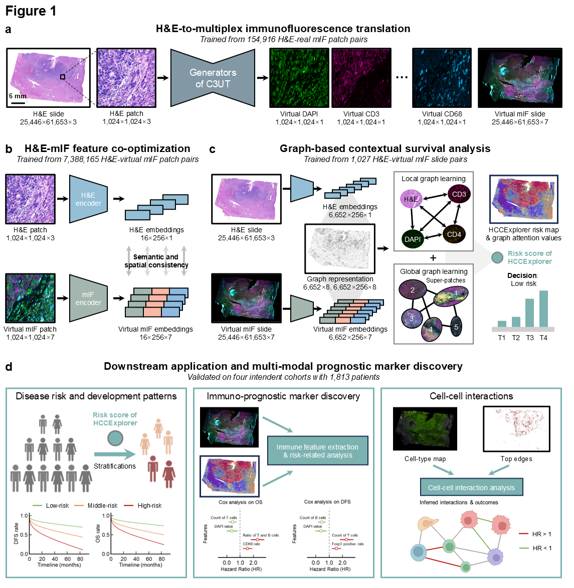

Transforming Histology into Virtual Multiplex Immunofluorescence to Decode Prognostic Spatial Immunity in Hepatocellular Carcinoma
Translates routine H&E into virtual mIF and models prognostic spatial immune organization in hepatocellular carcinoma.